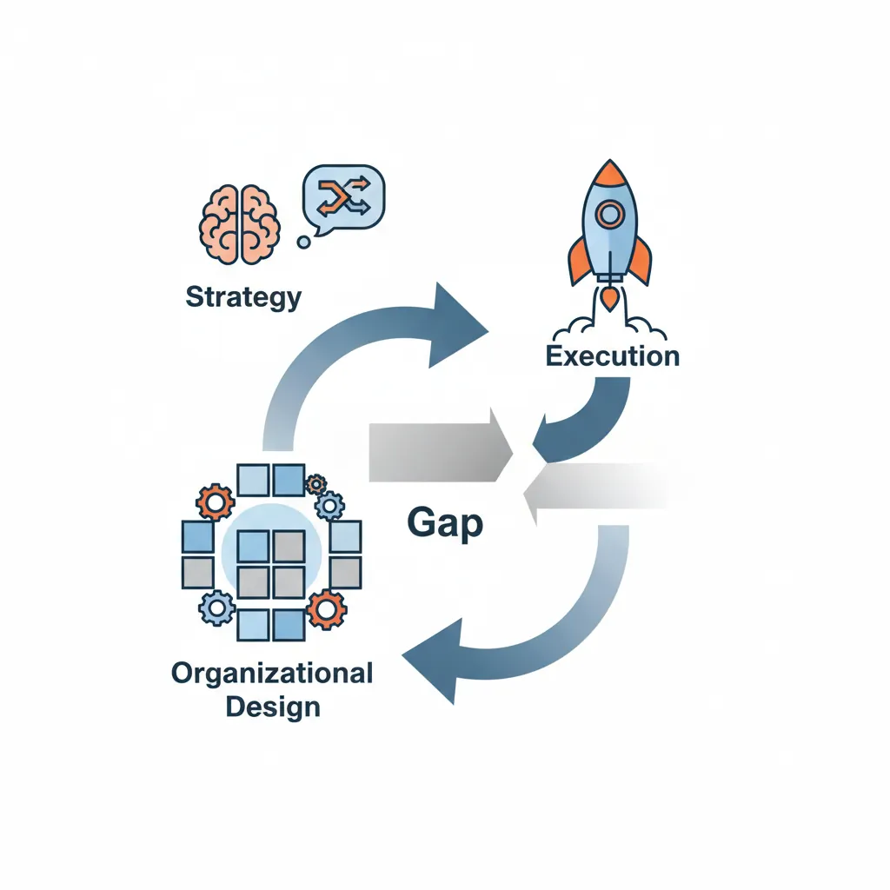
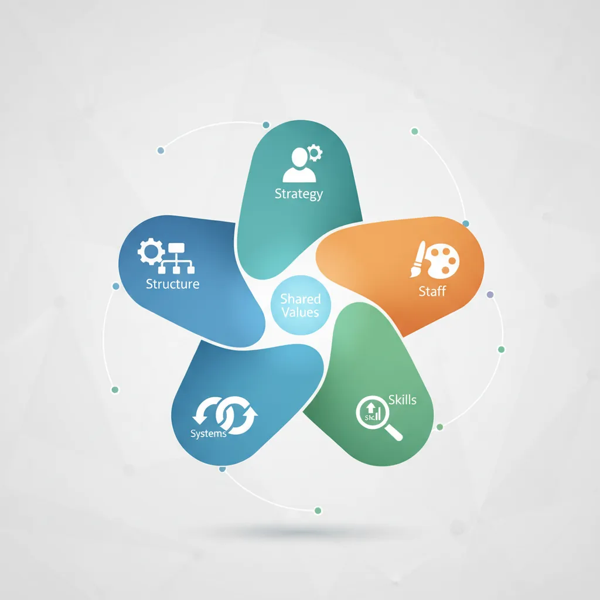
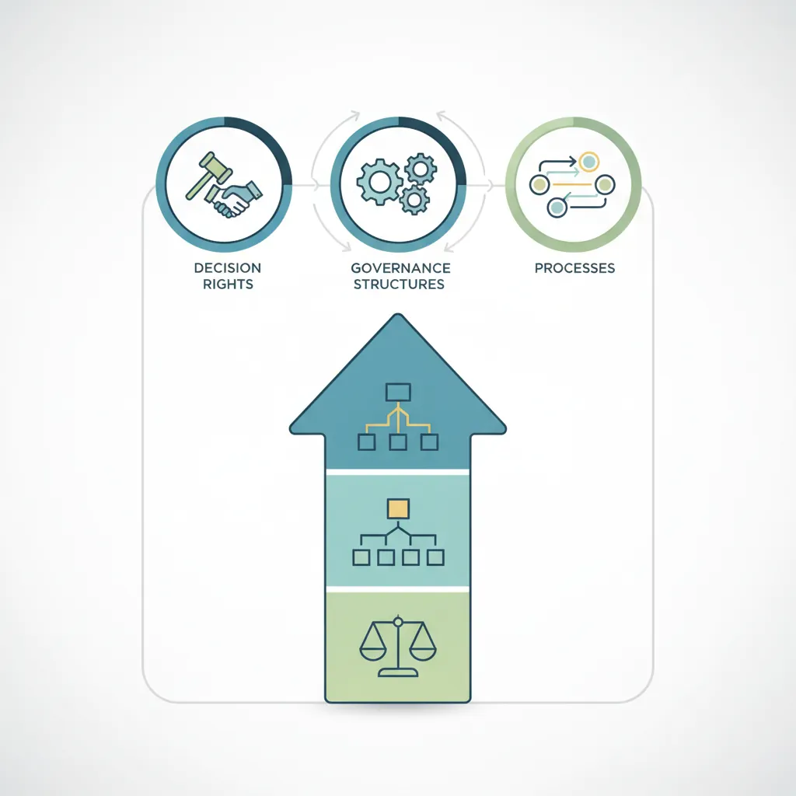
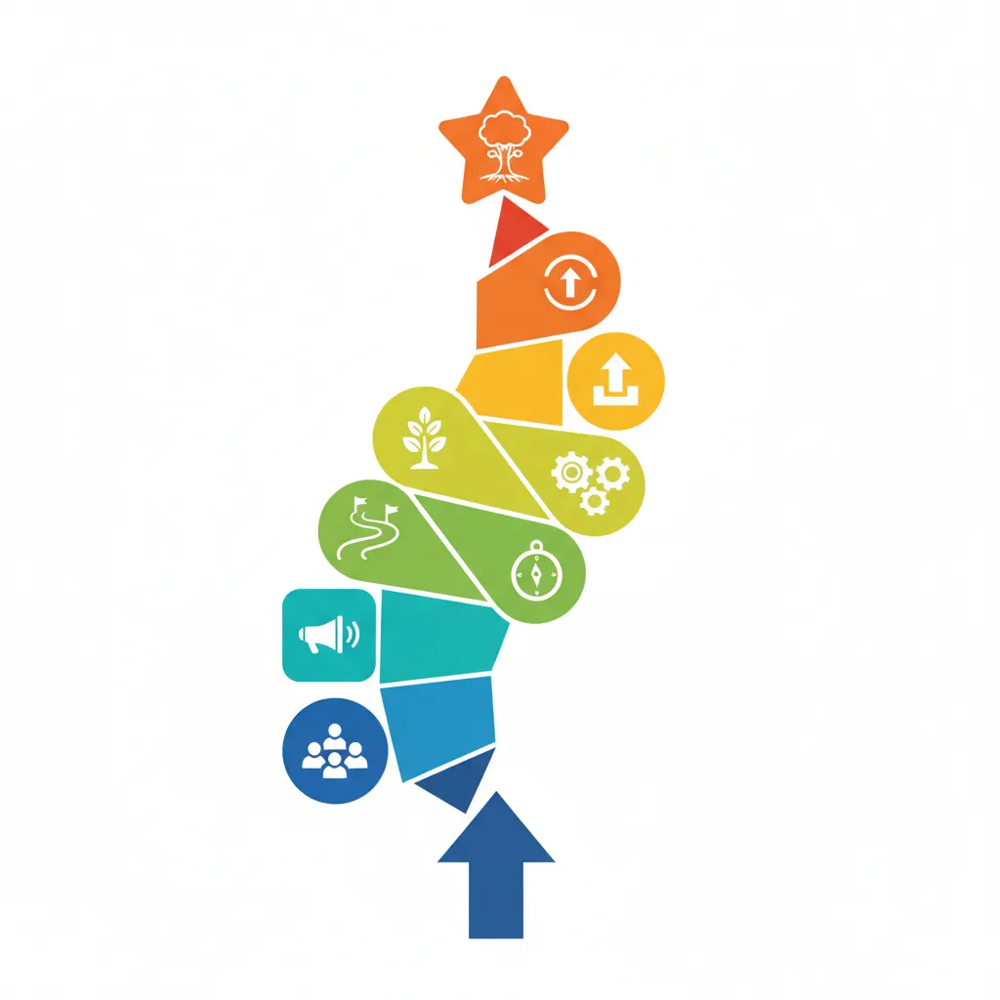
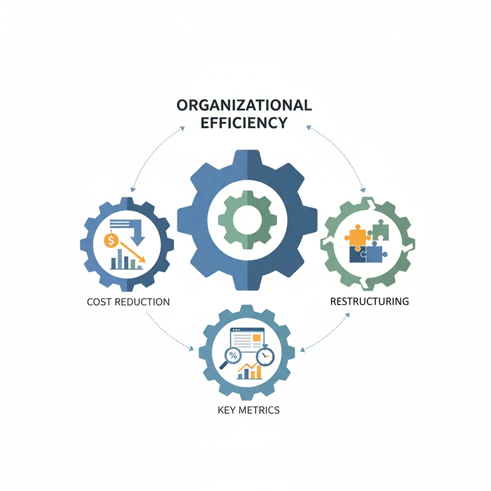

Business Strategy
Structured Problem Solving
Hypothesis-driven thinking, problem structuring, root cause analysisMECE & Issue Trees
Mutually exclusive, collectively exhaustive, logic treesStrategy Frameworks
Porter's Five Forces, SWOT, BCG Matrix, value chainMcKinsey 7S & Organizational Analysis
Structure, strategy, systems, shared values, skillsFinancial Due Diligence
Financial statements, valuation, M&A analysis, modelingClient Communication & Delivery
Pyramid principle, slide design, stakeholder managementAdvanced Frameworks (Bonus)
Blue ocean, disruption theory, scenario planningCase Interview Master Pack (Bonus)
Market sizing, profitability, M&A, pricing casesConsultant Toolkit (Bonus)
Templates, checklists, presentation frameworksKey Insight
Strategy fails without execution, and execution depends on organizational alignment. The McKinsey 7S Framework ensures all seven elements—Strategy, Structure, Systems, Shared Values, Skills, Staff, and Style—work together. Master this framework for transformation projects, post-merger integration, and organizational redesign.
1. Why Org Design Matters
A brilliant strategy is worthless without proper execution. And execution depends on how well your organization is designed and aligned. This is why organizational work is central to transformation projects.

Strategy vs Execution
Consider this classic challenge: A company develops a winning strategy to become more customer-centric, but:
- Sales teams are compensated on revenue, not customer satisfaction
- Customer service reports to Operations, not the Chief Customer Officer
- Systems don't share customer data across departments
- Middle managers resist changes that threaten their turf
Classic Insight
"Culture eats strategy for breakfast." — Attributed to Peter Drucker. Even the best strategy fails if the organization isn't aligned to execute it.
Common Organizational Challenges
| Challenge | Symptoms | Root Causes |
|---|---|---|
| Silos | Departments don't collaborate; finger-pointing | Misaligned incentives; no shared goals; poor communication |
| Slow decisions | Everything escalates; paralysis by analysis | Unclear decision rights; too many layers; risk aversion |
| Talent gaps | Can't execute new strategy; key roles unfilled | Outdated skills; no development programs; poor hiring |
| Change resistance | Initiatives stall; passive-aggressive behavior | Poor communication; no buy-in; lack of urgency |
| Inefficiency | High costs; duplicated efforts; bloated structure | Too many layers; wide span of control imbalances |
2. McKinsey 7S Framework
The McKinsey 7S Framework, developed by Tom Peters and Robert Waterman in the 1980s, remains one of the most powerful tools for organizational analysis. It identifies seven interdependent elements that must align for organizational effectiveness.

The 7S Model
┌─────────────────┐
│ Shared Values │ ← Center (connects all)
│ (Culture) │
└────────┬────────┘
│
┌───────────┬───────────┼───────────┬───────────┐
│ │ │ │ │
┌────▼────┐ ┌────▼────┐ ┌────▼────┐ ┌────▼────┐ ┌────▼────┐
│Strategy │ │Structure│ │ Systems │ │ Style │ │ Skills │
│(Hard S) │ │(Hard S) │ │(Hard S) │ │(Soft S) │ │(Soft S) │
└─────────┘ └─────────┘ └─────────┘ └─────────┘ └─────────┘
│
┌──────▼──────┐
│ Staff │
│ (Soft S) │
└─────────────┘
Hard S Elements (Easier to Change)
| Element | Definition | Key Questions |
|---|---|---|
| Strategy | The plan to achieve competitive advantage and goals | What is our strategy? Is it clear? Does everyone understand it? |
| Structure | How the organization is arranged (hierarchy, reporting lines, divisions) | How are we organized? Who reports to whom? How do teams interact? |
| Systems | Processes, workflows, IT systems, and routines | What systems run the business? How do we measure performance? |
Common Structure Types
- Functional: Organized by function (Marketing, Finance, Operations)
- Divisional: Organized by product, geography, or customer segment
- Matrix: Dual reporting lines (function + product/geography)
- Flat/Agile: Minimal hierarchy, self-organizing teams
Soft S Elements (Harder to Change)
| Element | Definition | Key Questions |
|---|---|---|
| Shared Values | Core beliefs and culture that shape behavior | What do we stand for? What's truly valued here (not what's stated)? |
| Skills | Capabilities and competencies of the workforce | What are we best at? What skills do we lack? What do we need? |
| Staff | People—their number, type, development, and management | Do we have the right people? How do we develop them? |
| Style | Leadership approach and management behavior | How do leaders behave? Is it top-down or collaborative? |
7S Applications
The 7S Framework is used in several high-stakes consulting scenarios:
| Scenario | How 7S Helps |
|---|---|
| Post-Merger Integration (PMI) | Compare 7S of both companies; identify misalignments; design integrated target state |
| Strategy implementation | Ensure all 7 elements support new strategy; identify blockers |
| Organizational redesign | Map current state; design target state across all 7S; plan transition |
| Performance turnaround | Diagnose which elements are misaligned; prioritize fixes |
| Digital transformation | Beyond Systems—ensure Skills, Style, and Culture support digital ways of working |
Key Principle: Alignment Over Perfection
The goal isn't to optimize each S individually—it's to ensure they align with each other. A company can succeed with an informal culture (Soft S) if its structure and systems (Hard S) support that informality.
Analyze your organization's internal alignment across all seven elements. Download as Word, Excel, or PDF.
All data stays in your browser. Nothing is sent to or stored on any server.
3. Operating Model Analysis
The operating model defines how an organization delivers on its strategy day-to-day. It's more granular than 7S, focusing on decision rights, governance, and processes.

Decision Rights (RACI)
Unclear decision rights cause delays, frustration, and accountability gaps. RACI is a simple tool to clarify roles:
| Role | Definition | Rules |
|---|---|---|
| Responsible | Does the work | Can be multiple people |
| Accountable | Final decision-maker; owns the outcome | Only one person (critical rule) |
| Consulted | Provides input before decision | Two-way communication |
| Informed | Notified after decision | One-way communication |
Example RACI Matrix: New Product Launch
| Decision/Task | Product Mgr | Engineering | Marketing | Finance | CEO |
|---|---|---|---|---|---|
| Define requirements | A/R | C | C | I | I |
| Build product | C | A/R | I | I | I |
| Set pricing | R | I | C | A | C |
| Launch campaign | C | I | A/R | C | I |
| Approve budget >$1M | R | I | I | C | A |
Governance
Governance structures define how decisions flow through the organization:
| Governance Element | Purpose | Example |
|---|---|---|
| Decision forums | Where key decisions are made | Executive Committee, Product Council, Investment Board |
| Escalation paths | How unresolved issues move up | Team Lead → Director → VP → C-suite |
| Meeting cadence | Rhythm of business reviews | Weekly ops, monthly performance, quarterly strategy |
| Authority limits | Spending and decision thresholds | Manager: $10K; Director: $50K; VP: $250K |
Processes & KPIs
Key processes must be mapped and measured. Focus on the critical few that drive business outcomes:
| Process Type | Examples | Key KPIs |
|---|---|---|
| Core (Value-Creating) | Product development, Sales, Service delivery | Time-to-market, Win rate, Customer satisfaction |
| Support | HR, Finance, IT, Legal | Cost per transaction, SLA compliance |
| Management | Planning, Budgeting, Performance review | Forecast accuracy, Decision cycle time |
4. Culture & Change Frameworks
Most transformation projects fail not because of bad strategy, but because of poor change management. These frameworks help you plan and execute organizational change.

Kotter's 8-Step Change Model
John Kotter's research identified eight steps that successful change efforts follow:
Kotter's 8 Steps
| Phase | Step | Description | Common Failure |
|---|---|---|---|
| Create Climate | 1. Create urgency | Help others see the need for change | Complacency; "things are fine" |
| 2. Build coalition | Assemble a group with power to lead change | Weak team; no executive sponsor | |
| 3. Form vision | Create a vision to direct the change | Vague or uninspiring vision | |
| Engage & Enable | 4. Communicate vision | Share vision through multiple channels | Under-communication by 10x |
| 5. Remove obstacles | Remove barriers; change systems blocking vision | Ignoring blockers; not removing resisters | |
| 6. Create quick wins | Generate visible, early victories | No short-term wins; momentum dies | |
| Implement & Sustain | 7. Build on change | Use momentum for more change; don't let up | Declaring victory too soon |
| 8. Anchor in culture | Make change stick; connect to culture | Change fades when leaders leave |
ADKAR Model
While Kotter focuses on organizational-level change, ADKAR (by Prosci) focuses on individual change. Each person must progress through five stages:
| Stage | Question Answered | If Stuck Here... |
|---|---|---|
| Awareness | "Why do we need to change?" | Communicate the business case; share external data |
| Desire | "What's in it for me?" (WIIFM) | Address personal concerns; show benefits; involve them |
| Knowledge | "How do I change?" | Provide training, guides, coaching |
| Ability | "Can I actually do it?" | Practice time, tools, support, remove barriers |
| Reinforcement | "Will I keep doing it?" | Recognition, metrics, accountability, celebrate wins |
Using Kotter + ADKAR Together
Kotter tells you what to do at the organizational level; ADKAR tells you where individuals are stuck. Use both: Kotter for planning the change program, ADKAR for diagnosing why specific teams or people aren't adopting.
Resistance Management
Resistance isn't the enemy—unmanaged resistance is. Expect it, plan for it.
| Type of Resistance | Root Cause | Response Strategy |
|---|---|---|
| Fear of unknown | Uncertainty about future state | Communicate clearly; share roadmap; be honest about unknowns |
| Loss of control | Feeling powerless in the change | Involve them in design; give choices where possible |
| Competence concerns | Fear of not having skills for new role | Training; coaching; gradual transition; support |
| Status/power loss | Current position threatened | Address directly; find new roles; sometimes make hard calls |
| Change fatigue | Too many changes; exhaustion | Prioritize; sequence; give breathing room; acknowledge |
Stakeholder Mapping for Change
Segment stakeholders by their influence (power to affect change) and support (attitude toward change). Focus energy on:
- High influence + Low support: Critical to convert (engage heavily)
- High influence + High support: Champions (leverage them)
- Low influence + Low support: Monitor, don't over-invest
- Low influence + High support: Mobilize as change agents
Evaluate your organization's readiness for change using the ADKAR framework. Download as Word, Excel, or PDF.
All data stays in your browser. Nothing is sent to or stored on any server.
5. Organizational Efficiency Diagnostics
Cost reduction and restructuring projects require rigorous analysis of organizational efficiency. Here are the key metrics consultants use.

Span of Control
Definition: The number of direct reports per manager.
| Span | Typical Context | Pros | Cons |
|---|---|---|---|
| Narrow (3-5) | Complex roles; new employees; high supervision needed | More oversight; development opportunities | More layers; higher cost; slower decisions |
| Medium (6-10) | Most knowledge work; experienced teams | Balanced oversight and efficiency | Manager capacity varies |
| Wide (10-20+) | Standardized roles; experienced staff; call centers | Fewer layers; lower cost; empowered teams | Limited development; less oversight |
Layers of Management
Count the number of levels from CEO to front-line worker. Rule of thumb: Most organizations perform best with 6-8 layers maximum. Excess layers slow decisions and add cost.
Delayering Analysis
Current State (10 layers) Target State (7 layers) ───────────────────────── ──────────────────────── CEO CEO ├─ President ├─ SVP (combined) │ ├─ EVP │ ├─ VP │ │ ├─ SVP │ │ ├─ Director │ │ │ ├─ VP │ │ │ ├─ Manager │ │ │ │ ├─ Sr. Director │ │ │ │ ├─ Lead │ │ │ │ │ ├─ Director │ │ │ │ │ └─ Staff │ │ │ │ │ │ ├─ Manager │ │ │ │ │ │ │ │ │ │ │ │ ├─ Lead │ │ │ │ │ │ │ │ │ │ │ │ │ └─ Staff │ │ │ │ │ Impact: 3 layers removed → Faster decisions, ~15-20% management cost savings
Incentive Alignment
People do what they're measured and rewarded for. Misaligned incentives are a root cause of organizational dysfunction.
| Desired Behavior | Misaligned Incentive | Better Incentive |
|---|---|---|
| Cross-selling between divisions | 100% of bonus on own division revenue | 20% of bonus on referral revenue |
| Long-term customer relationships | Sales comp on new logos only | Include retention and expansion metrics |
| Innovation and risk-taking | Punish all failures equally | Celebrate "smart failures"; separate innovation metrics |
| Collaboration across teams | Stack ranking against peers | Team-based bonuses; 360° feedback |
Capability Gaps
Assess current vs. required capabilities to identify development priorities:
Capability Assessment Matrix
| Capability | Strategic Importance | Current Level | Gap | Action |
|---|---|---|---|---|
| Data analytics | High | Medium | Large | Hire + upskill urgently |
| Customer service | High | High | None | Maintain; leverage |
| Legacy systems | Medium | High | N/A | Manage transition |
| Digital marketing | High | Low | Critical | Acquire/partner now |
Practice Exercise
Think of an organization you know well (current employer, past company, or case study):
- Apply the 7S Framework: Assess each S (1-5 scale) and identify misalignments
- Map a key decision using RACI: Who is A? Is there only one A? Are there too many Cs?
- Estimate span of control: Count layers from CEO to front line. Is it optimal?
6. Conclusion & Next Steps
Organizational analysis is where strategy meets execution. You now have the core tools:
- McKinsey 7S: Holistic view of organizational alignment
- Operating Model: Decision rights, governance, and processes
- Kotter & ADKAR: Change management at organizational and individual levels
- Efficiency Diagnostics: Span of control, layers, incentives, and capabilities
Remember: The goal isn't to optimize each element in isolation—it's to ensure alignment between strategy, structure, systems, and people.